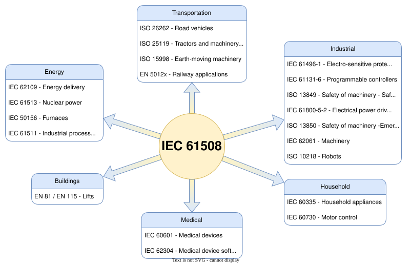
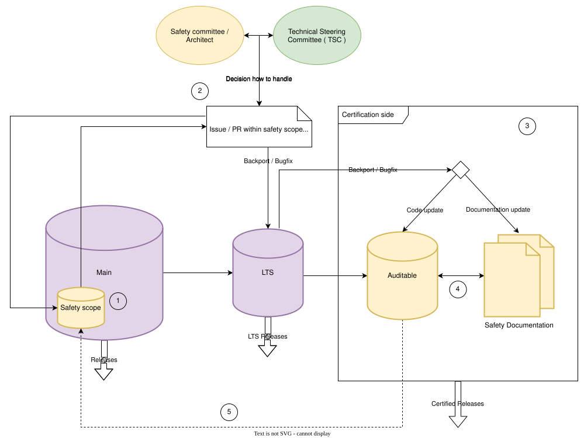

Zephyr Safety Overview
Introduction
This document is the safety documentation providing an overview over the safety-relevant activities and what the Zephyr Project and the Zephyr Safety Working Group / Committee try to achieve.
This overview is provided for people who are interested in the functional safety development part of the Zephyr RTOS and project members who want to contribute to the safety aspects of the project.
Overview
In this section we give the reader an overview of what the general goal of the safety certification is, what standard we aim to achieve and what quality standards and processes need to be implemented to reach such a safety certification.
Safety Document update
This document is a living document and may evolve over time as new requirements, guidelines, or processes are introduced.
Changes will be submitted from the interested party(ies) via pull requests to the Zephyr documentation repository.
The Zephyr Safety Committee will review these changes and provide feedback or acceptance of the changes.
Once accepted, these changes will become part of the document.
General safety scope
The general scope of the Safety Committee is to achieve a certification for the IEC 61508 standard and the Safety Integrity Level (SIL) 3 / Systematic Capability (SC) 3 for a limited source scope (see certification scope TBD). Since the code base is pre-existing, we use the route 3s/1s approach defined by the IEC 61508 standard.
- Route 3s
Assessment of non-compliant development. Which is basically the route 1s with existing sources.
- Route 1s
Compliant development. Compliance with the requirements of this standard for the avoidance and control of systematic faults in software.
Summarization IEC 61508 standard
The IEC 61508 standard is a widely recognized international standard for functional safety of electrical, electronic, and programmable electronic safety-related systems. Here’s an overview of some of the key safety aspects of the standard:
Hazard and Risk Analysis: The IEC 61508 standard requires a thorough analysis of potential hazards and risks associated with a system in order to determine the appropriate level of safety measures needed to reduce those risks to acceptable levels.
Safety Integrity Level (SIL): The standard introduces the concept of Safety Integrity Level (SIL) to classify the level of risk reduction required for each safety function. The higher the SIL, the greater the level of risk reduction required.
System Design: The IEC 61508 standard requires a systematic approach to system design that includes the identification of safety requirements, the development of a safety plan, and the use of appropriate safety techniques and measures to ensure that the system meets the required SIL.
Verification and Validation: The standard requires rigorous testing and evaluation of the safety-related system to ensure that it meets the specified SIL and other safety requirements. This includes verification of the system design, validation of the system’s functionality, and ongoing monitoring and maintenance of the system.
Documentation and Traceability: The IEC 61508 standard requires a comprehensive documentation process to ensure that all aspects of the safety-related system are fully documented and that there is full traceability from the safety requirements to the final system design and implementation.
Overall, the IEC 61508 standard provides a framework for the design, development, and implementation of safety-related systems that aims to reduce the risk of accidents and improve overall safety. By following the standard, organizations can ensure that their safety-related systems are designed and implemented to the highest level of safety integrity.
Why IEC 61508?
The IEC 61508 standard was selected because it serves as a foundational functional safety standard applicable across various industry sectors. It provides a robust framework that can be used as base for specific standards for different industries. This makes IEC 61508 particularly relevant for Zephyr, as the operating system’s versatility allows it to be effectively utilized across a wide range of industry sectors.
The following diagram illustrates the relationship between the IEC 61508 standard and other related standards:

IEC 61508 relation to other standards
Quality
Quality is a mandatory expectation for software across the industry. The code base of the project must achieve various software quality goals in order to be considered an auditable code base from a safety perspective and to be usable for certification purposes. But software quality is not an additional requirement caused by functional safety standards. Functional safety considers quality as an existing pre-condition and therefore the “quality managed” status should be pursued for any project regardless of the functional safety goals. The following list describes the quality goals which need to be reached to achieve an auditable code base:
Basic software quality standards
Coding Guidelines (including: static code analysis, coding style, etc.)
Safety Requirements and requirements tracing
Test coverage
Software architecture design principles
Layered architecture model
Encapsulated components
Encapsulated single functionality (if not fitable and manageable in safety)
Basic software quality standards - Safety view
In this chapter the Safety Committee describes why they need the above listed quality goals as pre-condition and what needs to be done to achieve an auditable code base from the safety perspective. Generally speaking, it can be said that all of these quality measures regarding safety are used to minimize the error rate during code development.
Coding Guidelines
The coding guidelines are the basis to a common understanding and a unified ruleset and development style for industrial software products. For safety the coding guidelines are essential and have another purpose beside the fact of a unified ruleset. It is also necessary to prove that the developers follow a unified development style to prevent systematic errors in the process of developing software and thus to minimize the overall error rate of the complete software system.
Also the IEC 61508 standard sets a pre-condition and recommendation towards the use of coding standards / guidelines to reduce likelihood of errors.
The project TSC and the Safety Committee of the project agreed to implement a staged and incremental approach for complying with a set of coding rules (AKA Coding Guidelines) to improve quality and consistency of the code base. Below are the agreed upon stages:
- Stage I (COMPLETED)
Coding guideline rules are available to be followed and referenced, but not enforced. Rules are not yet enforced in CI and pull-requests cannot be blocked by reviewers/approvers due to violations.
- Stage II
Reviewers/approvers can block pull-requests due to violations of the coding guidelines in pull-requests across the codebase.
Begin enforcement on a limited scope of the code base. Initially, this would be the safety certification scope. For rules easily applied across codebase, we should not limit compliance to initial scope. This step requires tooling, CI setup and an enforcement strategy.
- Stage III
Revisit the coding guideline rules and based on experience from previous stages, refine/iterate on selected rules.
- Stage IV
Expand enforcement to the wider codebase. Exceptions may be granted on some areas of the codebase with a proper justification. Exception would require TSC approval.
Note
Coding guideline rules may be removed/changed at any time by filing a GH issue/RFC.
Important
Current stage: The prerequisites to complete Stage II are currently being looked at: The tooling is in evaluation, CI setup and enforcement strategy is being worked on.
Requirements and requirements tracing
Requirements and requirement management are not only important for software development, but also very important in terms of safety. On the one hand, this specifies and describes in detail and on a technical level what the software should do, and on the other hand, it is an important and necessary tool to verify whether the described functionality is implemented as expected. For this purpose, tracing the requirements down to the code level is used. With the requirements management and tracing in hand, it can now be verified whether the functionality has been tested and implemented correctly, thus minimizing the systematic error rate.
Also the IEC 61508 standard highly recommends (which is like a must-have for the certification) requirements and requirements tracing.
Test coverage
A high test coverage, in turn, is evidence of safety that the code conforms precisely to what it was developed for and does not execute any unforeseen instructions. If the entire code is tested and has a high (ideally 100%) test coverage, it has the additional advantage of quickly detecting faulty changes and further minimizing the error rate. However, it must be noted that different requirements apply to safety for test coverage, and various metrics must be considered, which are prescribed by the IEC 61508 standard for the SIL 3 / SC3 target. The following must be fulfilled, among other things:
Structural test coverage (entry points) 100%
Structural test coverage (statements) 100%
Structural test coverage (branches) 100%
If the 100% cannot be reached (e.g. statement coverage of defensive code) that part needs to be described and justified in the documentation.
Software architecture design principles
To create and maintain a structured software product it is also necessary to consider individual software architecture designs and implement them in accordance with safety standards because some designs and implementations are not reasonable in safety, so that the overall software and code base can be used as auditable code. However, most of these software architecture designs have already been implemented in the Zephyr project and need to be verified by the Safety Committee / Safety Working Group and the safety architect.
Layered architecture model
The IEC 61508 standard strongly recommends a modular approach to software architecture. This approach has been pursued in the Zephyr project from the beginning with its layered architecture. The idea behind this architecture is to organize modules or components with similar functionality into layers. As a result, each layer can be assigned a specific role in the system. This model has the advantage in safety that interfaces between different components and layers can be shown at a very high level, and thus it can be determined which functionalities are safety-relevant and can be limited. Furthermore, various analyses and documentations can be built on top of this architecture, which are important for certification and the responsible certification body.
Encapsulated components
Encapsulated components are an essential part of the architecture design for safety at this point. The most important aspect is the separation of safety-relevant components from non-safety-relevant components, including their associated interfaces. This ensures that the components have no repercussions on other components.
Encapsulated single functionality (if not reasonable and manageable in safety)
Another requirement for the overall system and software environment is that individual functionalities can be disabled within components. This is because if a function is absolutely unacceptable for safety (e.g. complete dynamic memory management), then these individual functionalities should be able to be turned off. The Zephyr Project already offers such a possibility through the use of Kconfig and its flexible configurability.
Processes and workflow

Safety process and workflow overview
The diagram describes the rough process defined by the Safety Committee to ensure safety in the development of the Zephyr project. To ensure understanding, a few points need to be highlighted and some details explained regarding the role of the safety architect and the role of the safety committee in the whole process. The diagram only describes the paths that are possible when a change is related to safety.
On the main branch, the safety scope of the project should be identified, which typically represents a small subset of the entire code base. This subset should then be made auditable during normal development on “main”, which means that special attention is paid to quality goals (Quality) and safety processes within this scope. The Safety Architect works alongside the Technical Steering Committee (TSC) in this area, monitoring the development process to ensure that the architecture meets the safety requirements.
At this point, the safety architect plays an increasingly important role. For PRs/issues that fall within the safety scope, the safety architect should ideally be involved in the discussions and decisions of minor changes in the safety scope to be able to react to safety-relevant changes that are not conformant. If a pull request or issue introduces a significant and influential change or improvement that requires extended discussion or decision-making, the safety architect should bring it to the attention of the Safety Committee or the Technical Steering Committee (TSC) as appropriate, so that they can make a decision on the best course of action.
This section describes the certification side. At this point, the code base has to be in an “auditable” state, and ideally no further changes should be necessary or made to the code base. There is still a path from the main branch to this area. This is needed in case a serious bug or important change is found or implemented on the main branch in the safety scope, after the LTS and the auditable branch were created. In this case, the Safety Committee, together with the safety architect, must decide whether this bug fix or change should be integrated into the LTS so that the bug fix or change could also be integrated into the auditable branch. This integration can take three forms: First either as only a code change or second as only an update to the safety documentation or third as both.
This describes the necessary safety process required for certification itself. Here, the final analyses, tests, and documents are created and conducted which must be created and conducted during the certification, and which are prescribed by the certifying authority and the standard being certified. If the certification body approves everything at this stage and the safety process is completed, a safety release can be created and published.
This transition from the auditable branch to the main branch should only occur in exceptional circumstances, specifically when something has been identified during the certification process that needs to be quickly adapted on the “auditable” branch in order to obtain certification. In order to prevent this issue from arising again during the next certification, there needs to be a path to merge these changes back into the main branch so that they are not lost, and to have them ready for the next certification if necessary.
Important
Safety should not block the project and minimize the room to grow in any way.
Important
TODO: Find and define ways, guidelines and processes which minimally impact the daily work of the maintainers, reviewers and contributors and also the safety architect itself. But which are also suitable for safety.